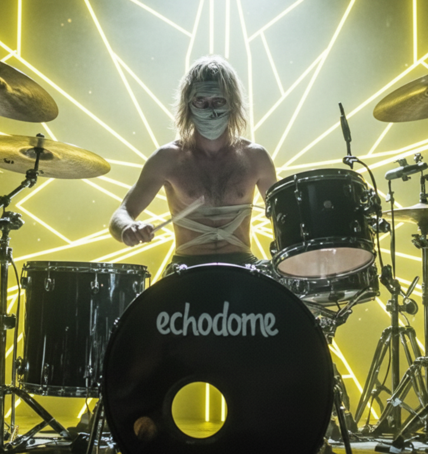

Five broken signals. One transmission.
Click any photo to expand


It all started in an abandoned studio on a rainy night in 2023...
TRACE was playing alone when OD walked in, guitar in hand.
They jammed for hours without saying a word.
EMBER found them through the noise — literally. She was living in the apartment above
and came down to complain, but ended up joining instead.
LYRA appeared one day, set up her keyboard in the corner, and never left.
DUSK was the last piece. He heard them from the street and knew he had found his home.
We didn't choose each other. The music did.